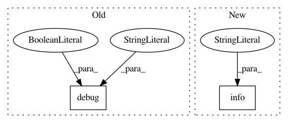

b3505e7e9e08a389dfff5788db2b6634abdeb1cd,scanpy/preprocessing/_normalization.py,,normalize_total,#Any#Any#Any#Any#Any#Any#Any#Any#,24
Before Change
else:
dat[layer_name] = _normalize_data(layer, counts, after, copy=True)
logg.debug(" finished", t=True, end=": ")
logg.debug("normalized adata.X")
if key_added is not None:
logg.debug(f"and added {key_added!r}, counts per cell before normalization (adata.obs)")
After Change
else:
dat[layer_name] = _normalize_data(layer, counts, after, copy=True)
logg.info(
" finished ({time_passed}):"
"normalized adata.X",
time=start,
)
if key_added is not None:
logg.debug(f"and added {key_added!r}, counts per cell before normalization (adata.obs)")
return dat if not inplace else None
In pattern: SUPERPATTERN
Frequency: 3
Non-data size: 2
Instances
Project Name: theislab/scanpy
Commit Name: b3505e7e9e08a389dfff5788db2b6634abdeb1cd
Time: 2019-06-05
Author: flying-sheep@web.de
File Name: scanpy/preprocessing/_normalization.py
Class Name:
Method Name: normalize_total
Project Name: theislab/scanpy
Commit Name: b3505e7e9e08a389dfff5788db2b6634abdeb1cd
Time: 2019-06-05
Author: flying-sheep@web.de
File Name: scanpy/preprocessing/_highly_variable_genes.py
Class Name:
Method Name: highly_variable_genes
Project Name: theislab/scanpy
Commit Name: b3505e7e9e08a389dfff5788db2b6634abdeb1cd
Time: 2019-06-05
Author: flying-sheep@web.de
File Name: scanpy/preprocessing/_deprecated/highly_variable_genes.py
Class Name:
Method Name: filter_genes_dispersion